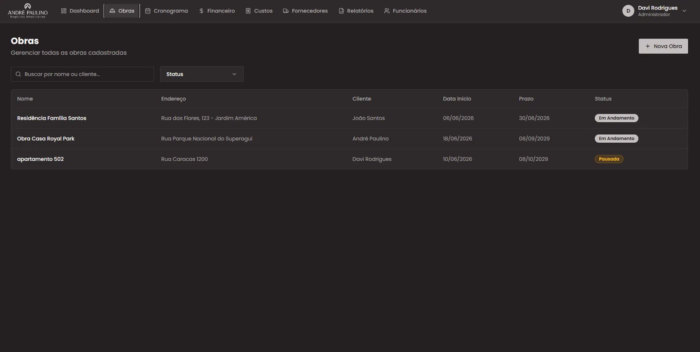
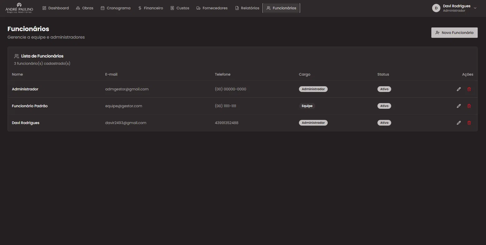
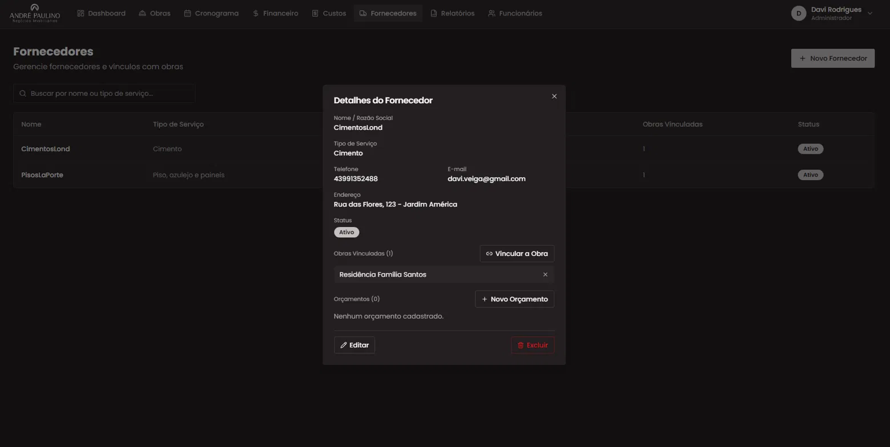
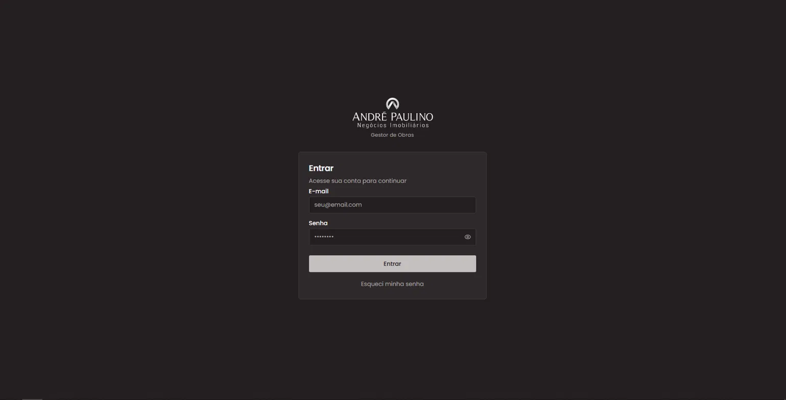

O problema
O acompanhamento das obras era dividido entre planilhas, conversas no WhatsApp e anotações manuais. Esse fluxo dificultava a organização das informações, o controle dos processos e a visualização do andamento de cada obra.
Portfólio do projeto de estágio
Uma plataforma web para organizar o acompanhamento de obras da André Paulino Negócios Imobiliários.
Conheça o projetoOrganização para decisões mais rápidas e um acompanhamento mais claro de cada obra.
01 / Sobre o projeto
O acompanhamento das obras era dividido entre planilhas, conversas no WhatsApp e anotações manuais. Esse fluxo dificultava a organização das informações, o controle dos processos e a visualização do andamento de cada obra.
Centralizar em um único sistema o gerenciamento de obras, funcionários e fornecedores, oferecendo informações mais organizadas para apoiar a coordenação da empresa.
02 / Desenvolvimento
O projeto foi organizado por etapas de análise, modelagem, desenvolvimento e validação das principais funcionalidades.
03 / Documentação
Relatório de estágio em PDF: arquivo ainda não disponibilizado na pasta do projeto.
04 / Telas e vídeo




05 / Identificação